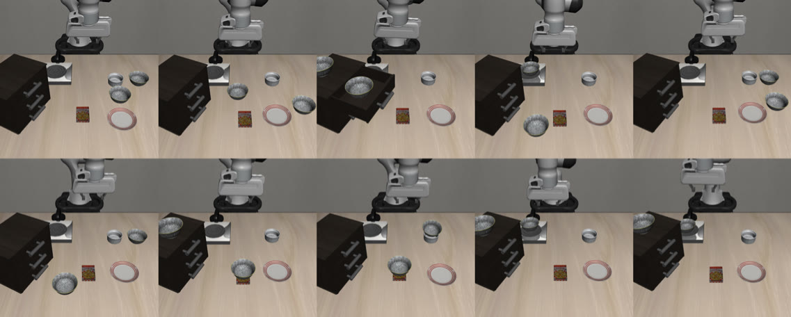
LIBERO-Spatial
The ten tasks at their start
The paper shows this suite's starting tables, because every task here ends the same way, with a bowl on the plate.
Liu et al. 2023, Figure 8, CC BY 4.0
Our model succeeds in 98% or more of the test runs on three of LIBERO's four suites. This chapter shows what those tasks are, how a run is scored, and why the first picture already gives most of them away.
Picture one table in the -Goal . On it are a bowl, a plate, a stove, a wine bottle, a wine rack, a cream cheese box and a small cabinet with drawers. The same table, with the same objects in the same places, is used for ten different tasks. Among them are open the middle drawer of the cabinet, put the bowl on the stove, turn on the stove and put the bowl on the plate.
One try at one of these tasks is called an . During an episode our model is called again and again, and each time it gets two camera pictures and the task's sentence (chapter 2). When an episode starts, both pictures look the same for all ten tasks, apart from objects shifted by a few centimetres. Only the sentence says which task to do.
Figure 3.1 plays three recordings made at that table, each of a person doing a different one of the ten tasks. For the first second the three tables look alike. Then the three arms go three different ways.
pi05_libero was trained on, side by side. They start from the same arrangement, give or take a few centimetres, and only the task differs. For each task this is the dataset's first demonstration, so none of them was picked for how it looks. Each frame is one step of the simulation, which runs 20 steps per simulated second. The clip plays 10 frames a second, half the simulation's speed, and it skips the moments when the person held the mouse still, because those steps were cut from the dataset. Like every picture the model gets, these are mirror images; the side note beside figure 3.4 says why. Video: our cut of physical-intelligence/libero, CC BY 4.0, episodes 379, 388 and 385 (tools/ch3/make_goal_demos_clip.py).Each of these recordings is one episode. pi05_libero's training data is made of episodes like them, and a test is an episode too, with the model steering the arm instead of a person. Either way, the episode ends at a point the simulator can check.
LIBERO (Liu et al., 2023) is a of 130 tasks for a robot arm in , such as putting a bowl on a plate, opening a drawer or turning on a stove. Its authors grouped the tasks into suites, and VLA papers mostly report four of them, each with ten tasks. pi05_libero was trained on the 40 tasks of those four suites, and it is tested on the same 40. The other ninety tasks make up LIBERO-90, which it never trained on (figure 3.2).
pi05_libero trained on and is tested on. LIBERO-100 is LIBERO-10 and LIBERO-90 together, and LIBERO-90's ninety tasks aren't in pi05_libero's training data. Counted by us from LIBERO's task files, one .bddl file per task in five folders, 2026-11-14. LIBERO-100's split: Liu et al. 2023, Section 4.2. The training data: openpi's convert_libero_data_to_lerobot.py.Everything in LIBERO is simulated, and three layers of software share the work (figure 3.3). At the bottom, the physics engine works out how everything moves. is built on MuJoCo and adds the robot arm, the cameras and the step that applies one action. LIBERO is built on robosuite and adds the scenes, the objects, the task files and the check that a task is done. The model never touches any of this directly. It only receives the pictures and sends back actions.
The simulated arm copies a real robot arm, the . Each task comes with 50 , which a person recorded by steering the simulated arm with a 3D mouse, a puck you push, lift and twist. The three in figure 3.1 are among them.
pi05_libero's training data doesn't hold all 50 recordings of every task. It holds 1,693 for its 40 tasks (chapter 2). Before openpi trained on them, the team replayed every recording in the simulator to save its pictures at 256 × 256 pixels instead of 128 × 128. They cut out the steps where the person held the mouse still, and they kept only the replays that still ended in success. By our count of the dataset, that left between 29 and 50 recordings per task.
The four ten-task suites differ in what stays the same from one task to the next.
| Suite | What stays the same | What changes between tasks | Example instruction |
|---|---|---|---|
| LIBERO-Spatial | a plate, a , a cookie box, a stove and a cabinet, each in its place | where two identical black bowls stand, and which of them is meant | pick up the black bowl between the plate and the ramekin and place it on the plate |
| LIBERO-Object | the basket in its place, and the job: pick up one grocery item and put it in the basket | which item to pick, and the other items on the floor around it | pick up the alphabet soup and place it in the basket |
| LIBERO-Goal | the scene, the objects and their positions | the goal | put the wine bottle on top of the cabinet |
| LIBERO-10 also called LIBERO-Long | nothing; its ten tasks use nine scenes in kitchens, living rooms and a study | the scene and the goal; nine of the ten sentences ask for two things | turn on the stove and put the on it |
Figure 3.4 shows one task from each suite in the first picture the model gets, with the objects named in its sentence marked. These pictures are mirror images, like the clip at the top of the chapter. The cabinets stand at the right of the table here, while LIBERO's paper shows them at the left. Every picture in pi05_libero's LIBERO training data was flipped this way, and so is every picture it gets in a test.
pick up the black bowl between the plate and the ramekin and place it on the plate
pick up the alphabet soup and place it in the basket
put the wine bottle on top of the cabinet
turn on the stove and put the moka pot on it
LIBERO's own pictures of its suites, the camera's way round

The paper shows this suite's starting tables, because every task here ends the same way, with a bowl on the plate.
Liu et al. 2023, Figure 8, CC BY 4.0
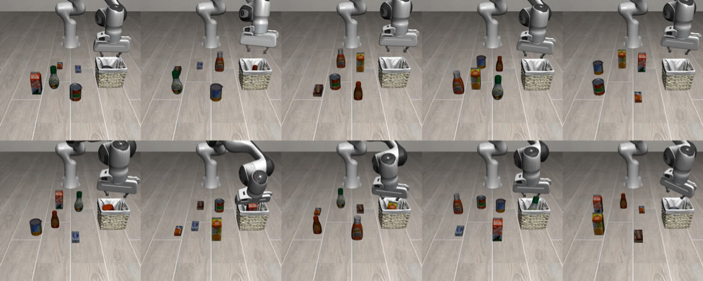
Each picture is the end of one task, with the named item in the basket.
Liu et al. 2023, Figure 9, CC BY 4.0
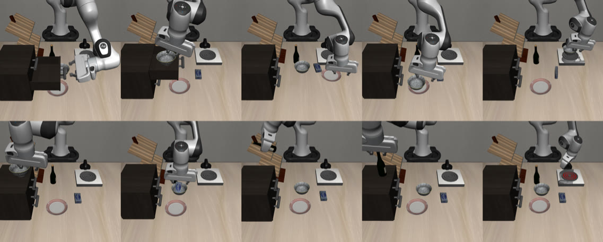
The same table as figure 3.1, the camera's way round, with each of the ten tasks done.
Liu et al. 2023, Figure 10, CC BY 4.0
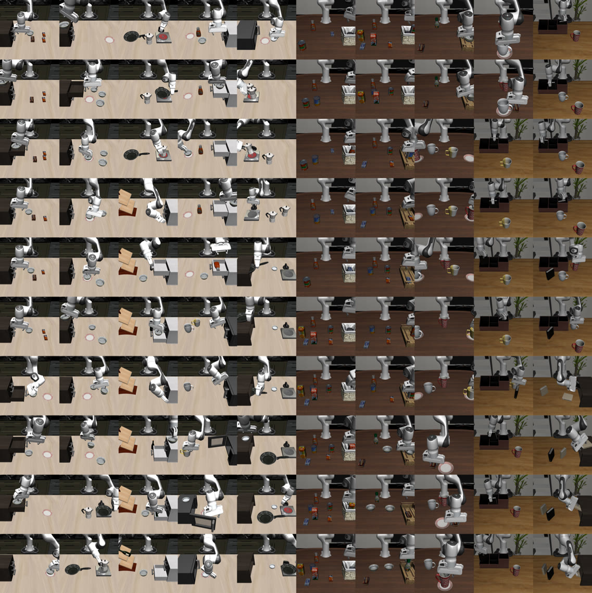
LIBERO-90 and LIBERO-10 together. The paper doesn't mark which ten tiles are LIBERO-10.
Liu et al. 2023, Figure 11, CC BY 4.0
LIBERO-90 holds the other ninety tasks of LIBERO-100. The paper describes them as short tasks and LIBERO-10's as long ones. By our count of the task files, LIBERO-90's tasks start from just 20 tables in kitchens, living rooms and studies, with between 2 and 7 tasks starting from the same arrangement on each table. On those tables, as in LIBERO-Goal, only the sentence says which task to do.
pi05_libero never trained on LIBERO-90. Using LIBERO-90, or data like it, to train a model that has to read the words is one of the options listed in chapter 6, and nothing about it has been decided.
This section follows one task from its file to its score. It's the task from our chapter 2 run, LIBERO-Spatial's pick up the black bowl between the plate and the ramekin and place it on the plate.
Each LIBERO task is written down in one text file, its . The file lists the objects on the table and gives each one a small square of the table to start in. It also states the goal as a the simulator can check, which for our task is that the bowl is on the plate. Figure 3.5 shows the real file, cut to those parts, next to the first picture the model got and a map of the squares drawn to scale.
The squares are small. Each one is 2 cm on a side, on a table 1.2 m wide, so the file leaves an object very little room to move from one start to the next. The sentence the model gets doesn't come from inside the file. LIBERO's code makes it from the file's name, by turning the underscores into spaces.
(:fixtures main_table - table wooden_cabinet_1 - wooden_cabinet flat_stove_1 - flat_stove ) (:objects akita_black_bowl_1 akita_black_bowl_2 - akita_black_bowl cookies_1 - cookies glazed_rim_porcelain_ramekin_1 - glazed_rim_porcelain_ramekin plate_1 - plate )
Fixtures stay where they're put: the table, a cabinet with three drawers and a stove. The five objects can be moved: two identical black bowls, a cookie box, a ramekin (a small cup) and a plate. Each gets a name, and its kind follows the dash.
(:regions
(plate_region (:target main_table)
(:ranges ((0.05 0.19 0.07 0.21))))
(between_plate_ramekin_region (:target main_table)
(:ranges ((-0.06 0.19 -0.04 0.21))))
(cabinet_region (:target main_table)
(:ranges ((0.02 -0.28 0.04 -0.26)))
(:yaw_rotation ((2.6613777765410678 2.7242096296128633))))
… 13 more regions
)
A region's four numbers are where it starts and ends along the table's two directions, in metres from the middle of the table, so each of these is a square 2 cm on a side. The cabinet's region also lets it turn, within a range 3.6 degrees wide (our conversion from radians). The file lists 16 regions and uses 7. All ten Spatial files carry this same list.
(:init 1(On akita_black_bowl_1 main_table_between_plate_ramekin_region) 2(On akita_black_bowl_2 main_table_next_to_ramekin_region) 3(On plate_1 main_table_plate_region) 4(On cookies_1 main_table_box_region) 5(On glazed_rim_porcelain_ramekin_1 main_table_ramekin_region) 6(On wooden_cabinet_1 main_table_cabinet_region) 7(On flat_stove_1 main_table_stove_region) )
One line per thing, naming the region it starts in. The numbers match the picture and the map below. The ten Spatial tasks differ here, in which regions the two bowls start in.
(:goal (And (On akita_black_bowl_1 plate_1)) )
Bowl 1 on the plate 3. All ten Spatial tasks have this same goal line.
 1
2
3
4
5
6
7
1
2
3
4
5
6
7
(:init) to its thing in the picture and its square on the map. The map is drawn from above to scale, with left and right as in the model's picture, which is mirrored (see the side note “Why the pictures are mirrored” in the first section). We read a region's four numbers as x from, y from, x to and y to, from LIBERO's code (envs/utils.py, rectangle2xyrange). The file's own (:language …) line, which says "Pick the akita black bowl…", is cut here because LIBERO never sends it to the model. Task file: LIBERO, libero/libero/bddl_files/libero_spatial/, at the commit openpi pins (f78abd6), MIT licence. Picture: rendered by us from stored state 0. Map: drawn by us from the file (tools/ch3/stored_state_numbers.py). Checked 2026-11-14.Each task also comes with 50 fixed starting arrangements, its . LIBERO's authors made them once, inside the task file's squares, and saved all 50 in one file per task that ships with LIBERO's code. The program that made them isn't in LIBERO's repository, so we can't say exactly how they were drawn. Figure 3.6 follows one of them to the first picture the model sees.
Gives each object its 2 cm square and states the goal.
Saved once by LIBERO's authors and shipped with its code, 92 numbers each.
The script builds the table, then puts the arm and the five loose objects where one stored state says.
A do-nothing action, sent 10 times while the objects fall into place. These steps aren't counted.
Turned 180 degrees and shrunk to 224 × 224 pixels, it goes to the model at step 0.
benchmark/__init__.py, envs/env_wrapper.py) and openpi's examples/libero/main.py, checked 2026-11-14. Picture: rendered by us from stored state 0.Every episode starts the same way in 's evaluation script, the program Physical Intelligence published to run LIBERO against the model. Our own runs use a copy of it. The script builds the table from the task file and then loads one stored state, which puts the arm and the five loose objects where that state says.
Every loose object is stored at the same height, 0.97 m, whatever its shape, and a comment in openpi's script says the simulator drops the objects. So the script sends a do-nothing action for 10 steps while they fall. Only then does it take the first picture, turn it 180 degrees and shrink it to 224 × 224 pixels for the model. None of those 10 steps counts toward the episode's length.
LIBERO's README says the starting states are fixed for benchmarking. If every run drew new arrangements, two models could be tested on different tables. With stored ones, every model gets the same 50 for each task, apart from the cabinet's and the stove's exact place (figure 3.7). An evaluation runs one episode from each starting state, so a task gets 50 trials and a suite gets 500. A trial is what openpi's script calls one of these episodes. Running all 50 turns a task's single yes or no into a rate. Figure 3.7 shows the 50 starting states of our task.
0 · our run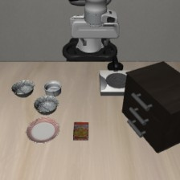
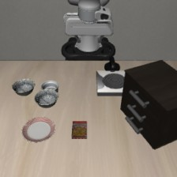
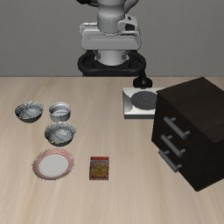
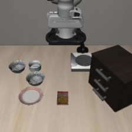
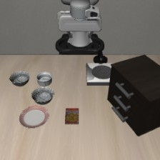
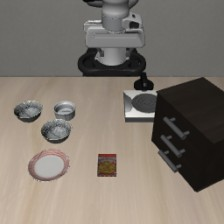
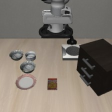
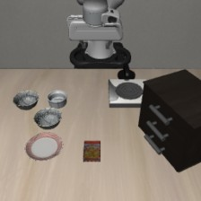
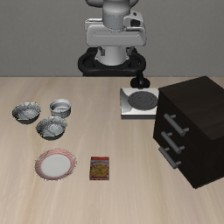
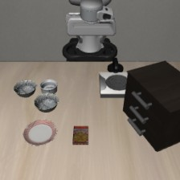
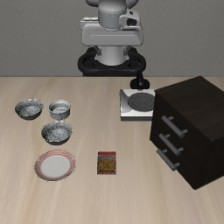
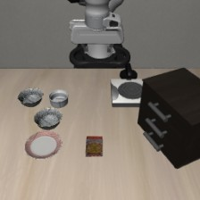
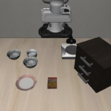
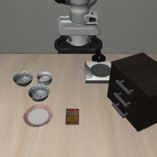
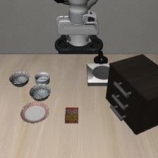
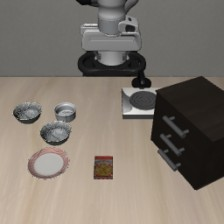
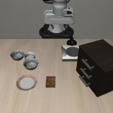
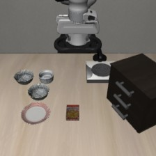
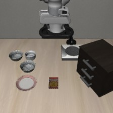
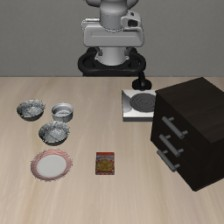
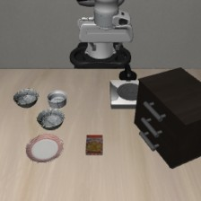
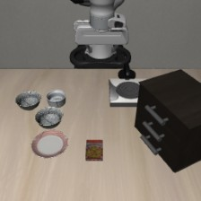
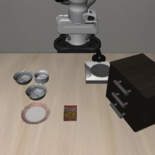
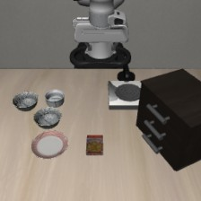
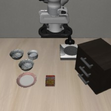
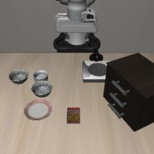
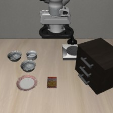
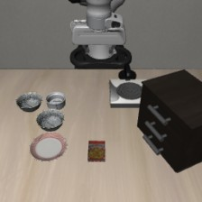
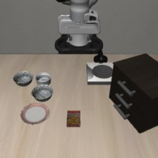
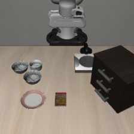
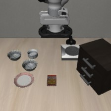
Once the first picture is taken, the episode moves in steps. In each the simulator applies one , the seven numbers the model sent, for 1/20 of a simulated second. The model is called once every 5 steps, as in chapter 2, so our run's 104 steps took 21 calls and 5.2 seconds of simulated time (our arithmetic). Between two calls the model sees nothing new. The robot runs the 5 actions it was given, and the next pictures arrive with the next call. Simulated seconds aren't clock seconds. In our own runs a successful LIBERO-Spatial episode took 11.7 seconds on the clock, on average.
After every step, the simulator checks the goal condition. The episode ends as soon as the condition holds, or when a step limit runs out. For our task the condition is (On akita_black_bowl_1 plate_1), and figure 3.8 shows the three tests LIBERO's code runs to decide it.
envs/predicates/base_predicates.py (On), envs/object_states/base_object_states.py (check_ontop) and the two objects' model files. Checked 2026-11-14.When a goal has several parts, such as the top drawer is open and the bowl is in it, the simulator runs every part's test, and the goal holds only at a step where all of them pass. No test asks whether the robot has let go of the bowl, either. In our run, the model's last actions all still said to keep the gripper closed when the goal held after step 104.
In openpi's evaluation script the step limits are 220, 280, 300 and 520 steps for Spatial, Object, Goal and LIBERO-10. The comments beside them give the longest training demonstration in each suite as 193, 254, 270 and 505 steps, and we counted the same four numbers in the training dataset. So each limit sits a little above the longest time a person took on that suite. By our reading, a limit is there so that an episode that never reaches its goal still ends. Such an episode runs to the limit, which for Spatial is 220 steps, or 11 simulated seconds.
Figure 3.9 puts the whole of our chapter 2 run on one ruler, from the moment the stored state was loaded to the step the goal held.
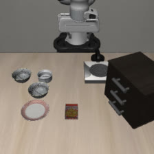
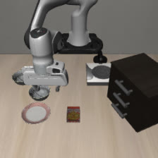
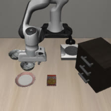
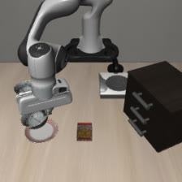
(On akita_black_bowl_1 plate_1), first held after step 104, 5.2 simulated seconds in, so the episode stopped there and counted as a success. Had it never held, the episode would have run to step 220 and counted as a failure. The white dots mark the four pictures. Our run's 104 steps were an ordinary length, since this task's 45 demonstrations in the training data took 75 to 168 steps. openpi's script also stops an episode if the simulator raises an error, and counts it as a failure. Recording: our run of openpi's pi05_libero checkpoint, 2026-11-11 (stage1/runs/recorded-call-spatial0). Seconds: our arithmetic from robosuite's 20 steps a second.The is the share of episodes in which the goal held. Each task is a tenth of its suite's episodes, so a task the model always failed would cost the suite's rate 10 points. A rate from few episodes is also rough. Near 50%, one task's 50 episodes pin its rate down only to within about 14 points either way, and a suite's 500 narrow that to about 4.4 (our arithmetic, at 95% confidence).
openpi's README reports 98.8% on LIBERO-Spatial for pi05_libero, but it doesn't say how many episodes or runs stand behind that number. So we don't turn the percentage into a count of episodes. The script runs 500 per suite by default.
Not every group counts the same way, either. LIBERO's own paper tested its policies with 20 episodes per task, each allowed up to 600 steps, so before comparing two scores, check how each one was counted.
The plan we submitted for the course asks how the score changes with the words. It would run every task under four prompts: its own instruction, a paraphrase of it, a blank prompt, and the instruction of a different task on the same table. Run in full, that comes to 4 prompts × 4 suites × 10 tasks × 50 trials = 8,000 episodes. The plan is a proposal we submitted, not a decision. Chapter 6 keeps the list of what the team has decided, and which experiments we run is still open.
Start with what pi05_libero learned from. Chapter 2 said openpi it on 1,693 demonstrations of LIBERO's 40 tasks. Those are the same 40 tasks the benchmark tests it on. Each demonstration comes with its task's sentence, word for word the sentence the test sends, and starts from that task's table.
So the tasks, the sentences and the tables in the test are all ones the model has practised, each task in 29 to 50 demonstrations. The only new thing is the exact starting position of each object and of the arm. LIBERO's 50 stored starting states aren't the demonstrations' own starts. LIBERO's authors drew them separately, at random in the same way as the demonstrations' starts, so a test start differs from a training start by the same few-centimetre shifts that figure 3.7 shows between test starts. Figure 3.10 puts three of each side by side for one task.
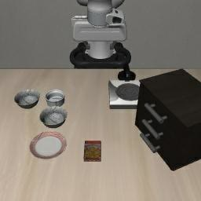
episode 1272state 0Before you look at figure 3.11: in which of the four suites could you name the task from its first picture alone, without the sentence?
A task's starting table means the objects on the table and where each one starts, as the task file's (:init) block lays them out (figure 3.5). In LIBERO-Spatial, LIBERO-Object and LIBERO-10, almost every task has a starting table of its own, so its first picture is enough to name the task. In LIBERO-Goal no first picture can, because all ten tasks share one table. A model can reach a high score by learning "this starting table means this motion" and never looking at the sentence. Figure 3.11 puts the first picture of all 40 tasks side by side.
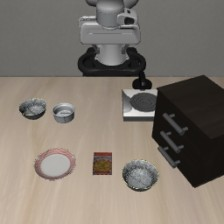
next to the ramekinWe compared the starting tables in LIBERO's task files and found those two exceptions. In LIBERO-Spatial, pick up the black bowl on the stove and pick up the black bowl on the wooden cabinet start from the same table. One black bowl sits on the stove and an identical one sits on the cabinet, so the picture can't say which one to take. The goal check names one particular bowl, though, so carrying the other one to the plate counts as a failure. In LIBERO-10, put both the alphabet soup and the tomato sauce in the basket and put both the cream cheese box and the butter in the basket also start from the same table. For each of these pairs, only the sentence tells the two tasks apart. Figure 3.12 shows both pairs at full size.
It's the first picture that matters here, because the model keeps nothing from one call to the next. Each call gets only the two pictures of that moment and the sentence. So in a pair, the first actions come from two pictures that look the same for both tasks, and from the sentence. Once the arm has started toward one bowl, every later picture shows it on its way to that bowl.
Why would training let a model skip the words? Training scores it on one thing. At each moment of a demonstration the model proposes its next actions, and its error is how far they are from what the person did next. That is the error of chapter 2, and nothing in it asks whether the sentence was used. As chapter 1 put it, imitation only learns what helps it copy.
In Spatial, Object and LIBERO-10, the starting table already says which task this is, so it already says what the person did next. On the table with a bowl on the cookie box, the person always picked up that bowl. A model that went by the picture alone would make the same small error as one that read the sentence, so training has no reason to prefer the reader. In Goal the table is the same for all ten tasks, as figure 3.1 showed, so only the sentence says what the person did next. A model that ignored it would keep mixing up ten different motions, and its error would stay larger.
By our reading, then, training asked for the words only in Goal and in the two pairs. That is a reading of how the training works, not a measurement. Whether pi05_libero actually goes without the words elsewhere is what chapter 4 tests.
The two shared pairs are the places outside Goal where training did reward reading. The demonstrations of pick up the black bowl on the stove and of pick up the black bowl on the wooden cabinet start from the same table, but the person took a different bowl in each. Only the sentence could tell the model which bowl the person took, so on those two tasks a model that skipped the words would have kept a larger error. The same goes for the two basket tasks in LIBERO-10. Counted in the training data, the Spatial pair has 79 of the suite's 432 demonstrations and the basket pair 82 of LIBERO-10's 379. In Goal all 428 start from the one shared table, and in Object none do (our count). This is our reading too, and it makes the Spatial pair a good place to test the model, which chapter 4 does.
LIBERO-Goal works the other way. All ten of its tasks start from one table, so a model that ignored the sentence would get the same first pictures in all ten. It would make the same kind of motion each time, apart from the random numbers each call starts from. That one motion can finish one of the ten goals, maybe two, and it misses the rest. Averaged over the ten tasks, that comes to about one success in ten. This is our own arithmetic, and chapter 5 shows a published number that matches it.
pi05_libero succeeds in 98.0% of Goal episodes, far above one in ten. At the first step Goal's ten tasks differ only in their sentence, apart from the few-centimetre shifts, which are drawn the same way for every task and so say nothing about which one it is. The model must be using the sentence in Goal. What this chapter can't settle is whether it also uses the sentence where the picture already names the task, in Spatial, Object and LIBERO-10, because a high score there would come out the same either way. Figure 3.13 sets each suite's score next to its count of starting tables.
It can't show whether the model reads. Eight tasks have a table of their own. The stove and cabinet pair, where reading is needed, is two tasks of the ten inside this average.
It can't show whether the model reads. Every task has a table of its own, so the picture could have done all the work.
It shows that the model uses the sentence here. All ten tasks share one table, so no picture could pick the right one, and a model without the words would land near one in ten.
It can't show whether the model reads. Eight tasks have a table of their own, and the two basket tasks that share one are two of the ten inside this average.
pi05_libero's from openpi's LIBERO README, the counts of tables are from our comparison of the task files (2026-11-11), and the sentences on what each score can show are our reading. Scores: openpi examples/libero/README.md, commit 215abfb, as in chapter 2.“98% on LIBERO-Spatial means the model understands spatial words like between.”
Figure 3.11 shows why that doesn't follow. In eight of the ten Spatial tasks the starting table belongs to that task alone, and in training the person always took the same bowl from it. So the picture points to the right bowl as clearly as between the plate and the ramekin does, and a model could reach 98.8% with the words or without them. The stove and cabinet pair is the one place in the suite where the words have to do the work. The opposite conclusion goes too far as well. The score doesn't show that the model ignores between either, because a score this high would come out the same both ways. Chapter 4 tests it.
Objects moved further than LIBERO moves them, our check, and LIBERO's own reel
LIBERO-PRO moved the object the robot has to pick up away from where LIBERO starts it. For OpenVLA and π0, success collapsed once the shift passed 0.2, and π0.5 kept some success up to about 0.4, in units the paper doesn't name. The authors write that even small shifts sent the arm toward the object's usual spot instead of where it now stood, and they read that as memorised positions. They also replaced the instructions with meaningless strings, which chapter 5 covers.
Zhou et al. 2025, LIBERO-PRO, Section 2.3 and Figure 4, CC BY 4.0 · arXiv 2510.03827 · chapter 5
Each task file has an (:init) block that says where every object starts. We compared those blocks across the four suites, then compared the two shared pairs line by line. Goal has 1 starting table for its 10 tasks, Spatial 9, Object 10 and LIBERO-10 9. The pictures on this page come from a script that builds each scene from LIBERO's stored states and runs no model.
LIBERO's datasets page plays a reel of the human demonstrations that come with the suites. The site carries no licence, so we link to it instead of copying it here.
Goal's 98.0% already shows that pi05_libero uses the sentence when the picture can't name the task. Whether it also uses the sentence when the picture can, in Spatial, Object and LIBERO-10, is still open, and those suites' scores can't answer it. Inside those suites, the two shared pairs are the tasks that can answer it, because there the picture can't decide. The plan we submitted with the course sign-up compares the four suites under different prompts, and this chapter says what such a comparison can and can't show. That plan is a proposal, not a decision, and chapter 6 lists what the team has decided. Chapter 4 turns the open question into tests.
In which suite must a model read the instruction to succeed, and why?
LIBERO-Goal. All ten tasks start from the same scene, so only the sentence tells them apart.
How many episodes does one full evaluation of one suite under one prompt take?
500 (10 tasks × 50 trials).
A model scores 98% on LIBERO-Spatial. Explain why that doesn't show it understands between the plate and the ramekin.
The "between the plate and the ramekin" task starts from its own arrangement of objects, so the picture alone identifies the task. The model can map arrangements to motions without using the words.
Every training demonstration comes with its sentence. Why can training still leave a model that never reads the sentence in LIBERO-Spatial?
Training scores only the model's actions against what the person did next. In eight of the ten Spatial tasks the starting table already says which bowl the person took, so going by the picture alone gives the same small error as reading the sentence, and nothing pushes the model to read. Only in the stove and cabinet pair does the error depend on the sentence.
Why does openpi's script send a do-nothing action for 10 steps before it takes the first picture, and why don't those steps count toward the 220-step limit?
LIBERO stores every loose object at the same height, 0.97 m, and the script's comment says the simulator drops the objects, so the script waits for them to fall before the model sees anything. The model doesn't act during those steps, so they aren't part of its episode. In the code the loop runs for the step limit plus the 10 waiting steps (`while t < max_steps + num_steps_wait`), so the model still gets all 220 of its own steps.
In questions 6 to 14, pick the answer you think is right. The option opens and says whether it's right and why, and you can open the others afterwards to see what's wrong with them.
Which suite starts all ten of its tasks from the same table?
No. The objects are the same, but the two black bowls start in different places in each task, so the tables differ (figure 3.11, top row).
No. The basket stays, but each task has its own set of groceries on the floor, in its own places.
Right. All ten tasks start from one arrangement of the bowl, plate, stove, wine bottle, cream cheese and cabinet, so only the sentence says which task it is.
How does an episode in pi05_libero's training data end?
Right. The recording stops once the goal has held for 10 steps, and recordings whose replay didn't end in success were dropped, so all 1,693 end with the task done.
No. The step limit ends a test episode that never reached its goal. The recordings ran until the person had done the task, and any that didn't end in success were left out.
No. LIBERO's recording script stops by itself once the goal has held for 10 steps, and the OpenVLA team kept only the replays that still ended in success.
What are the 50 trials of one task?
No. All 50 use the same objects in the same arrangement, and only small shifts differ (figure 3.7).
No. The 50 starting states are stored with the benchmark, so every model and every run starts from the same 50.
Right. One episode runs from each stored state, so a task gets 50 trials and a suite gets 500.
A LIBERO-Spatial episode has run for 150 steps, and the bowl still isn't on the plate. When does the episode end?
Right. The simulator checks the goal condition after every step. If it holds, the episode ends as a success, and if it still doesn't hold at the 220-step limit, the episode ends as a failure.
No. The model has no way to stop an episode. Its actions only move the hand and open or close the gripper, and the simulator decides when the episode is over by checking the goal condition.
No. 104 is when the goal happened to hold in our run. A Spatial episode that hasn't reached its goal keeps going until step 220.
In our run, the bowl reached the middle of the plate after step 104 while the model was still telling the gripper to stay closed. What did the simulator do?
No. None of LIBERO's three tests asks about the gripper. The bowl and the plate touched, the plate wasn't higher than the bowl, and their centres were less than 3 cm apart, so the goal held.
Right. After every step LIBERO checks that the two objects touch, that the plate isn't higher than the bowl, and that their centres are under 3 cm apart from above. All three held after step 104, while the gripper was still told to stay closed.
No. The goal is checked after every single step, and the episode ends at the first step where it holds. The limit, 220 steps for Spatial, only ends episodes that never reach the goal.
What is new to pi05_libero when it is tested on LIBERO-Spatial?
No. openpi trained pi05_libero on demonstrations of the same 40 tasks the benchmark tests, with the same sentences and the same starting tables. LIBERO tests tasks the model has practised.
Right. LIBERO's authors drew the 50 stored starting states separately from the demonstrations' starts, but in the same way, so the tables, the objects and the sentences are all familiar and only the small shifts are new.
No. Each demonstration in the training data carries its task's sentence, and all 40 match the benchmark's sentences word for word.
pi05_libero succeeds in 98.8% of LIBERO-Spatial episodes. What does that show about the word between?
No, and this is the wrong belief the chapter names. Eight of the ten Spatial tasks start from a table no other task uses, so the picture picks the bowl as well as the sentence does. The score can't tell which of the two the model went by.
Right. A model can score high by learning each starting table's motion. Only the stove and cabinet pair needs the words, and a score over all ten tasks hides how the model did on those two.
No, that goes too far the other way. The score shows only that the model doesn't need the words for most of these tasks, not that it never uses them. Chapter 4 tests that.
pi05_libero succeeds in 98.0% of LIBERO-Goal episodes. What does that show?
No, that goes too far. Goal shows the model uses the sentence where the picture can't name the task. In Spatial, Object and LIBERO-10 the picture could have done the work, so their scores can't say, and chapter 4 tests it.
No. Where the picture already names the task, a high score can't tell. In Goal all ten tasks start from one table, so a model without the words would land near one success in ten, and 98.0% is far above that.
Right. At the first step Goal's ten tasks differ only in their sentence, so the sentence must be what sends the arm to the right goal there.
Why do the two shared pairs in figure 3.12 matter for our question?
Right. In suites where the picture usually gives the task away, these four tasks can only be told apart by reading. Chapter 4 runs our model on the Spatial pair.
No. Every task in a pair can be done. The sentence says which bowl, or which two groceries, to take, so a model that reads it can succeed.
No. One pair among ten tasks still leaves eight Spatial tasks with a table of their own. In Goal, all ten share one.
libero/libero/benchmark/__init__.py, which loads each task's stored states from its .pruned_init file; libero/libero/envs/bddl_base_domain.py, whose step checks the goal after every step; and the task files in libero/libero/bddl_files/. github.com/Lifelong-Robot-Learning/LIBEROexamples/libero/main.py at commit 215abfb: the step limits and the longest-demonstration comments beside them, 50 trials per task, seed 7, 10 settling steps, and the 180-degree turn of both pictures. Checked 2026-11-11 and 2026-11-13. github.com/Physical-Intelligence/openpi(:init) blocks in all four suites, 2026-11-11: Goal 10 tasks from 1 layout, Spatial 10 from 9, Object 10 from 10, LIBERO-10 10 from 9, with the two shared pairs compared in full.tools/ch3/render_first_frames.py in this repo. Our render of LIBERO-Spatial task 0 from state 0 differs from the picture the model received in that run by 1.2 on average per pixel value (out of 255, about what JPEG compression leaves), against 5.3 for state 1.pi05_libero checkpoint on 2026-11-11: LIBERO-Spatial task 0, first starting state, success at step 104. Kept in the repo under stage1/runs/recorded-call-spatial0/.scripts/collect_demonstration.py (a recording stops once the goal has held for 10 steps; SpaceMouse by default), scripts/create_dataset.py, libero/libero/envs/bddl_base_domain.py (a new arrangement is sampled from the task file's regions on reset), and the task files in libero/libero/bddl_files/, read 2026-11-14. github.com/Lifelong-Robot-Learning/LIBEROmacros.py (IMAGE_CONVENTION = "opengl"), environments/robot_env.py (camera pictures), environments/base.py (one action per step), models/robots/manipulators/panda_robot.py (the Panda, "designed by Franka"), devices/spacemouse.py (the 3D mouse's controls). github.com/ARISE-Initiative/robosuiteexperiments/robot/libero/regenerate_libero_dataset.py (pictures re-recorded at 256 × 256, still steps removed, failed replays dropped, and the note that the RLDS conversion turns pictures 180 degrees) and libero_utils.py, and the README's LIBERO section, read 2026-11-14. github.com/openvla/openvlarlds_dataset_builder (MIT), the LIBERO builders that turn both pictures with [::-1,::-1], linked from OpenVLA's README, read 2026-11-14. github.com/moojink/rlds_dataset_buildermeta/episodes.jsonl and meta/info.json (1,693 episodes, 10 fps, longest episodes 193, 254, 270 and 505 steps, 29 to 50 episodes per task, our count), and frames of episodes 379, 851 and 1, read through the Hugging Face datasets-server on 2026-11-14. huggingface.co/datasets/physical-intelligence/liberolibero/libero/bddl_files/libero_spatial/pick_up_the_black_bowl_between_the_plate_and_the_ramekin_and_place_it_on_the_plate.bddl and the other nine Spatial files (same regions, same goal); benchmark/__init__.py (the sentence comes from the file name; stored states loaded from .pruned_init); envs/utils.py (rectangle2xyrange, how a region's four numbers are read); envs/bddl_base_domain.py (control_freq=20, line 63; placement of fixtures and objects; _reset_internal, which places the cabinet and the stove again at every reset; step, which checks the goal after every step); envs/problems/libero_tabletop_manipulation.py (_check_success ANDs the goal's parts; the table's size and height); envs/predicates/base_predicates.py (On) and envs/object_states/base_object_states.py (check_ontop, the three tests); the bowl's and plate's model files; the cabinet's and stove's joints; envs/env_wrapper.py (set_init_state); the README's note that the starting states are fixed for benchmarking.init_files/libero_spatial/…pruned_init), loaded with numpy and torch on 2026-11-14 by tools/ch3/stored_state_numbers.py (no simulator): 50 rows of 92 numbers, the objects' spread, the arm's spread.robosuite/environments/base.py (what control_freq means, how many physics updates a step runs) and robosuite/macros.py (SIMULATION_TIMESTEP = 0.002).examples/libero/main.py (step limits and the longest-demonstration comments, lines 60-67; seed 7 and the comment that the seed "seems to affect object positions even when using fixed initial state", lines 45, 50 and 195; the 10 waiting steps outside the limit, line 104; an error ends an episode, lines 160-162); src/openpi/policies/policy.py (the random key starts at jax.random.key(0) and is split at every call, lines 65 and 75); examples/libero/README.md (the 98.8 / 98.2 / 98.0 / 92.4 table, with no episode count).meta/episodes.jsonl, meta/tasks.jsonl and meta/info.json, Hugging Face (CC BY 4.0), fetched 2026-11-14: our count of each suite's longest demonstration (193, 254, 270, 505) and of Spatial task 0's 45 demonstrations (75 to 168 steps).stage1/runs/recorded-call-spatial0/calls.json (2026-11-11): 104 steps, 21 calls, the gripper commands at the end; our 60 episodes in stage1/results/exp1-shared-table.md (2026-11-11): 11.7 s per successful episode in our runs.meta/episodes.jsonl, tasks.jsonl and info.json, read 2026-11-14: 1,693 demonstrations, 432 Spatial, 454 Object, 428 Goal and 379 LIBERO-10, between 29 and 50 per task (our count); its 40 task sentences match the benchmark's word for word (our comparison); demonstrations 1272, 1273 and 1275 (frame 0) in figure 3.10. huggingface.co/datasets/physical-intelligence/liberoexperiments/robot/libero/regenerate_libero_dataset.py and README (read 2026-11-14): each LIBERO demonstration replayed with the do-nothing commands removed, and only the replays that reached the goal kept. Moo Jin Kim on GitHub, 2024-10-17: "the train sets include less than 500 demos per suite because we filtered out unsuccessful demos". the script · openvla issue 138src/openpi/policies/libero_policy.py (each call takes the current table and wrist pictures, the state and the prompt) and src/openpi/policies/policy.py (only the random key carries over between calls); examples/libero/main.py sends task.language as the prompt; examples/libero/README.md for the scores 98.8, 98.2, 98.0 and 92.4. github.com/Physical-Intelligence/openpi